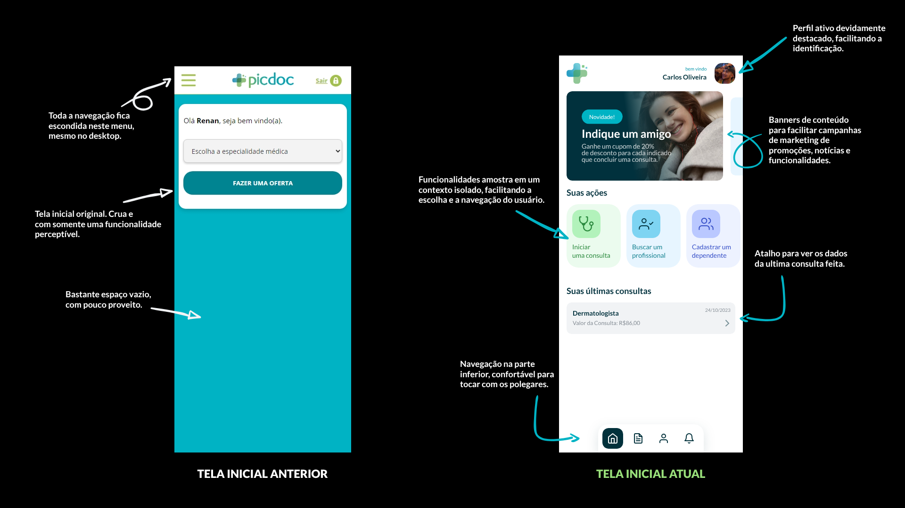

Começo dos trabalhos
No primeiro momento, fiz uma desk research a fim de entender o meio que a empresa atua e suas particularidades, além dos problemas e insatisfações comuns do segmento. Telemedicina não era um tema conhecido para mim, apesar de produtos intermediadores de serviços não serem uma novidade. Esta pesquisa me trouxe insights importantes para o entendimento sobre a área da saúde e o crescimento da Telemedicina no Brasil, como por exemplo:
- Entre 2020 e 2021, foram realizados mais de 7,5 milhões de teleconsultas, envolvendo mais de 52 mil médicos, com aproximadamente 87% desses atendimentos sendo primeiras consultas, o que evitou deslocamentos e sobrecarga do sistema físico de saúde.
- 62% dos médicos brasileiros ainda utilizam telemedicina regularmente, mesmo após o fim da pandemia, e 89% das operadoras de saúde mantêm serviços de telessaúde.
Entendendo os usuários
ssss
Outra informação relevante compreendida graças a pesquisa é que, em sua maioria, os usuários não entendem termos técnicos da área da saúde, sendo assim, todos os textos precisarão ser elaborados pensando em traduzir os conceitos mais técnicos para outros mais simples, facilitando o entendimento das informações.
As primeiras melhorias de experiência
Facilitando o processo de suporte
Uma das melhorias de experiência que sugeri visava melhorar
a experiência de suporte aos usuários. No website da empresa
haviam páginas de FAQ (Perguntas frequentes) com
muitas entradas. Neste contexto, informação é muito útil, mas
não ajuda se você não tiver como procurar por ela, e esse era
o caso destas páginas. Não somente as perguntas usavam um componente
pouco amigável para o SEO como não havia barra de busca que permitisse
o usuário pesquisar sua dúvida e encontrar respostas prontas, o que
fazia o time de suporte receber muitas mensagens de dúvidas que já
estavam respondidas.
Orientei que um sistema de busca era necessário neste momento da
jornada em todas as páginas de FAQ, assim os usuários poderiam consultar
facilmente informações e dúvidas que tivessem. Além disso, para facilitar
o acesso a ajuda quando o FAQ não for suficiente, redesenhei o fluxo de
atendimento ao cliente, criando um funil de atendimento. Ele inicia no
FAQ, e a partir dele, leva aos outros canais de atendimento. Com a implementação
deste novo sistema, houve uma redução de requisições ao suporte para problemas pequenos e requisições de informações.
Aliado a este trabalho, orientei a criação de um funil de suporte, iniciado
na página de FAQ e terminado nos canais de atendimento, onde o usuário teria
primeiramente o FAQ com informações relevantes que poderiam resolver seu problema,
mas caso sentisse que não, no próprio FAQ teria meios para entrar em contato com o
time de suporte. Esse movimento é bastante comum em grandes empresas para criar um
caminho linear e funcional para dar suporte aos usuários.
De serviço online para WebApp instalável
"Como ter um app leve, rápido, fácil de manter e custando pouco?" ... Esse foi um dos questionamentos que surgiram com a demanda de melhoria
de experiência do projeto. Afinal, para alcançar uma melhora significativa,
não bastaria somente mudar a experiência visual se não houvesse melhorias
na experiência de acesso. Criar facilitadores para que os pacientes e médicos
pudessem chegar na plataforma é importante para aumentar a conversão e também
a fidelização.
Tomando por base experiências anteriores de projeto sugeri que a equipe
de desenvolvedores focasse esforços em transformar a plataforma em um PWA
instalável. Isso permitiria que os pacientes e profissionais de saúde pudessem
instalar o site em seus computadores
e smartphones, assim como um app, direto das storefronts ou do navegador.
A grande vantagem dos PWAs em relação aos apps nativos é que eles são
muito mais leves (cerca de 800kb) e demandam muito menos recursos do
smartphone ou computador, permitindo suportar a partir de linguagens da
web, diversos tipos de dispositivos tanto na categoria de entrada quanto
os topo de linha, tudo a partir de uma única base de código. Isso torna
o desenvolvimento simples, eficiente e barato.
Os PWAs também tem a vantagem de poderem ser distribuidos nas storefronts
de apps mobile, permitindo que o usuário instale o app da fonte que ele já
conhece, sem passos adicionais.
O projeto final da interface
A interface da Picdoc foi projetada para ser uma interface de aparência moderna, acessível e simplificada. O objetivo final desta experiência é que desde os usuários mais leigos até os mais experiêntes com tecnologia consigam distinguir elementos e identificar interações com esforço mínimo, enquanto permite criar interfaces de interação procedural, sem sobrecarga visual ou cognitiva para o usuário.
Os elementos são construidos com base no conceito de Bentô UI, um conceito de interface que consiste em encaixar caixas umas ao lado das outras, como as lancheiras orientais com divisórias conhecidas como Bentô e também presentes nos porta-remédios. Este conceito de interface é bastante moderno e versátil, já que permite fácil personalização, modularização e responsividade.
Quanto aos formatos arredondados, foi utilizado o formato das pílulas médicas, porém com menos arredondamento nos cantos do que elas geralmente tem, para se encaixarem também ao conceito de Bentô UI. O objetivo final é ter uma aparência estéticamente séria (mas não rígida) e que faça alusão a um ambiente médico em várias frentes.
Nesta etapa do projeto, atuei tanto criando os componentes e interfaces do protótipo em alta fidelidade quanto construindo a própria interface utilizando uma plataforma de low-code, o TeleportHQ, e algumas edições diretas no código. Nesta plataforma, traduzi todos os protótipos e interações em telas prontas para integração com os sistemas da empresa.